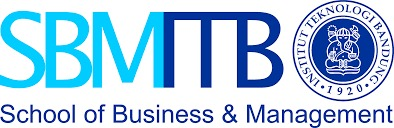

CONFERENCE RUNDOWN
-
DAY 1
24 NOV 2021 -
DAY 2
25 NOV 2021
08:30 - 09:00
REGISTRATION
09:15 - 09:25
WELCOME SPEECH
Seno Adhi Damono, CEO of On Us Asia
09:25 - 09:35
KEYNOTE SPEECH & OPENING PROCESSION
Ida Fauziyah, Minister of Manpower of The Republic of Indonesia
09:40 - 12:00
SESSION 1 - HIGH LEVEL PANEL
POST-PANDEMIC BUSINESS OUTLOOK & LEADERSHIP DURING AND AFTER CRISIS
Sri Mulyani Indrawati*, Minister of Finance of The Republic of Indonesia
Erick Thohir*, Minister of State-Owned Enterprises of The Republic of Indonesia
Budi Sadikin*, Minister of Health of The Republic of Indonesia
Honesti Basyir*, CEO PT Bio Farma (Persero)
Soleh Ayubi*, Chairman BUMN Muda
13:00 - 15:00
SESSION 2 - EXPERT TALK
RETHINK THE WORKFORCE AND WORKPLACE STRATEGIES FOR POST-PANDEMIC ERA
Satiyobudi Santoso, Senior Manager Human Capital Department PT Brantas Abipraya (Persero)
Andree Harahap, Principal at PT Egon Zehnder International
Eddyman Kharma, Strategic Partnership LinkedIn South East Asia
Suryo Sasono, Vice President of Human Resources and CEO Office Bukalapak
Hae Ryun Kim, HR Leader, AWS APJ (Asia Pacific & Japan)
10.00 - 12.00
SESSION 3 - BEST PRACTICE
EMPLOYEE ENGAGEMENT IN REMOTE AND HYBRID WORKING ENVIRONMENTDudun Abdul Falah Sidiq, VP Human Capital Business Partner Telkomsel
Yulius Hadi Wijaya, Head of Corporate Industrial Relations and HR Department
at PT Indocement Tunggal Prakarsa Tbk
Alvien Khairullah, Chief Human Resources Officer Vidio Dot Com
Aloysius Budi Santoso, Chief of Corporate Human Capital Development PT Astra International Tbk
10.00 - 12.00
SESSION 3 - BEST PRACTICE
EMPLOYEE ENGAGEMENT IN REMOTE AND HYBRID WORKING ENVIRONMENTDudun Abdul Falah Sidiq, VP Human Capital Business Partner Telkomsel
Yulius Hadi Wijaya, Head of Corporate Industrial Relations and HR Department
at PT Indocement Tunggal Prakarsa Tbk
Alvien Khairullah, Chief Human Resources Officer Vidio Dot Com
Aloysius Budi Santoso, Chief of Corporate Human Capital Development PT Astra International Tbk
10.00 - 12.00
SESSION 3 - BEST PRACTICE
EMPLOYEE ENGAGEMENT IN REMOTE AND HYBRID WORKING ENVIRONMENTDudun Abdul Falah Sidiq, VP Human Capital Business Partner Telkomsel
Yulius Hadi Wijaya, Head of Corporate Industrial Relations and HR Department
at PT Indocement Tunggal Prakarsa Tbk
Alvien Khairullah, Chief Human Resources Officer Vidio Dot Com
Aloysius Budi Santoso, Chief of Corporate Human Capital Development PT Astra International Tbk